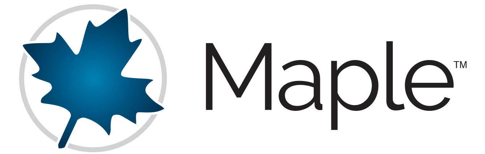
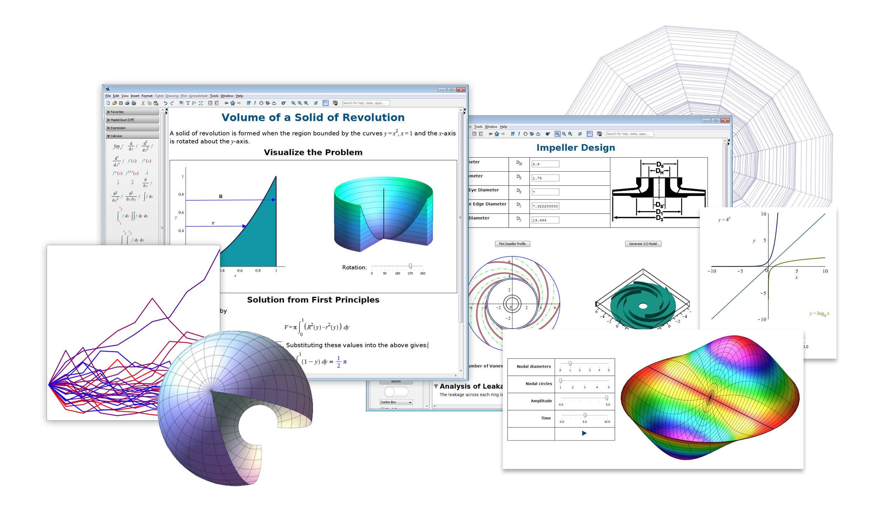

Maplesoft proudly sponsors ACA 2015

Maplesoft[tm], a subsidiary of Cybernet Systems Co., Ltd. in Japan, has over 25 years of experience developing products
for technical education and research, offering a solution that applies to every aspect of academic life. Its product suite
reflects the philosophy that given great tools, people can do great things.
Maplesoft's core technology is the world's most advanced symbolic computation engine, which is the foundation for all of
its products, including Maple[tm], the technical computing and documentation environment; MapleSim[tm], the
high-performance, multi-domain modeling and simulation tool for physical systems; and Maple T.A.[tm], a web-based system
for creating and assessing online tests and assignments.
Maplesoft also introduced a fundamental shift in technical education through its Clickable Math[tm] and Clickable
Engineering[tm] initiatives. The idea behind this shift is to create technology that will allow students and teachers to
focus on the concepts, not the tool. These initiatives deliver powerful mathematics through visual, interactive
point-and-click methods in Maple, while the intuitive physical modeling environment of MapleSim helps teachers to quickly
demonstrate the connection between modeling concepts and the underlying mathematical theory.
Over 90% of advanced research institutions and universities worldwide, including MIT, Stanford, Oxford, the NASA Jet
Propulsion Laboratory, and the U.S. Department of Energy, have adopted Maplesoft solutions to enhance their education and
research activities. In industry Maplesoft?s customers include Ford, Toyota, NASA, Canadian Space Agency, Motorola, and
DreamWorks, covering sectors such as automotive, aerospace, electronics, defense, consumer products, and entertainment.
Visit www.maplesoft.com to learn more.
Here is a list of customer stories and their associated links:
- Maple helps discover the mathematics-based Gömböc shape
- Rose-Hulman Institute of Technology Uses Maple to Improve Learning for Two Thousand Students
- The Art of Modeling Seashell Morphology
